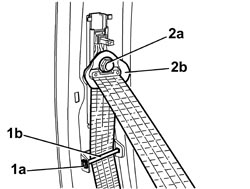
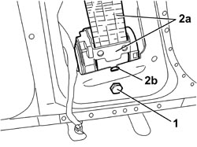

7065A10 FRONT SEAT BELT (ONE) LEFT OR RIGHT - R.R.
- Path
- Procedures > 70 FITTINGS > 7065 SAFETY BELTS AND ACCESSORIES > 7065A FRONT SAFETY BELTS > 7065A10 FRONT SEAT BELT (ONE) LEFT OR RIGHT - R.R.
- Kind
- repair procedure (removal / refitting; the operation number is the code)
- Applies to
- all engines; all production periods
- Interactive page
- https://sloeber94.github.io/elrnDB/alfa/159/en/#/939011384
Applies to: all engines; all production periods
 Removing
Removing
 Refitting
RefittingOp. 7040L40 FRONT DOOR RUNNING BOARD (ONE), LEFT OR RIGHT - R.R.
Op. 7050A20 ONE-PIECE REAR SEAT CUSHION - R.R.
Op. 7040L44 REAR DOOR RUNNING BOARD (ONE), LEFT OR RIGHT - R.R.
Op. 7040H36 CENTRE PILLAR LOWER ELEMENT (ONE), LEFT OR RIGHT - R.R
Op. 7040H38 CENTRE PILLAR UPPER ELEMENT (ONE), LEFT OR RIGHT - R.R
1. Remove the retaining clip (1a) and extract the pin (1b).
2. Undo the nut (2a) and move the idler mount (2b).

Applies to: all engines; all production periods
1. Undo the bolt.
2. Remove the seat belt (2a) complete with reel, releasing retainer (2b) from the seat.

Applies to: all engines; all production periods
Refitting
Removing- Check that the seat belt is not damaged.
- Place the reel in position and attach the retainer to the body.
- Tighten the bolt to the recommended torque.
Component | Fastening | dia | Value (daNm) | Validity |
|---|---|---|---|---|
FRONT SEAT BELT REEL | Bolt | 7/16” | 3.6 ÷ 4.4 |
- Position the idler mount and tighten the nut to the recommended torque.
Component | Fastening | dia | Value (daNm) | Validity |
|---|---|---|---|---|
FRONT SEAT BELT IDLER SUPPORT | Nut | 7/16” | 3.6 ÷ 4.4 |
- Insert the pin and do up the retaining clip.
Op. 7040H38 CENTRE PILLAR UPPER ELEMENT (ONE), LEFT OR RIGHT - R.R
Op. 7040H36 CENTRE PILLAR LOWER ELEMENT (ONE), LEFT OR RIGHT - R.R
Op. 7040L44 REAR DOOR RUNNING BOARD (ONE), LEFT OR RIGHT - R.R.
Op. 7050A20 ONE-PIECE REAR SEAT CUSHION - R.R.
Op. 7040L40 FRONT DOOR RUNNING BOARD (ONE), LEFT OR RIGHT - R.R.
Topics linked from this page (5)
- 7040H36 CENTRE PILLAR LOWER ELEMENT (ONE), LEFT OR RIGHT - R.R
- 7040H38 CENTRE PILLAR UPPER ELEMENT (ONE), LEFT OR RIGHT - R.R
- 7040L40 FRONT DOOR RUNNING BOARD (ONE), LEFT OR RIGHT - R.R.
- 7040L44 REAR DOOR RUNNING BOARD (ONE), LEFT OR RIGHT - R.R.
- 7050A20 ONE-PIECE REAR SEAT CUSHION - R.R.